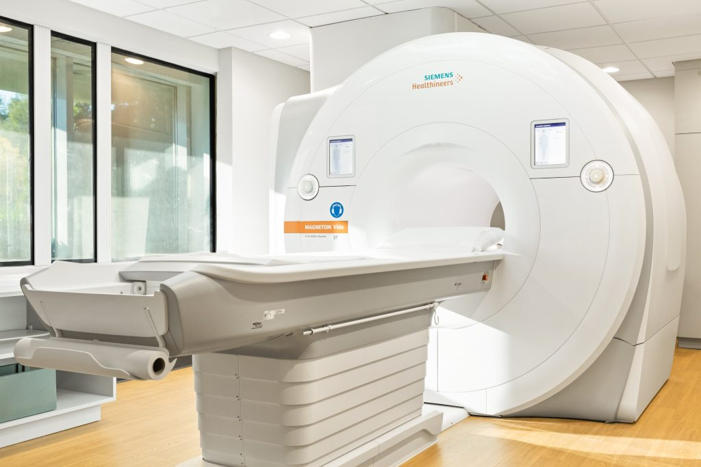
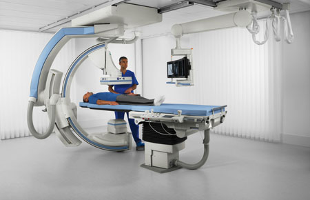

1 / 7
النظام الذكي للتنبؤ بأعطال الأجهزة الطبية
إدارة الصيانة الطبية – تجمع تبوك الصحي
تحويل الصيانة من نمط تفاعلي إلى نمط استباقي يعتمد على البيانات والذكاء الاصطناعي لرفع جاهزية الأجهزة وتقليل الأعطال.
الأجهزة المستهدفة

MRI
Magnetic Resonance Imaging
 CT
CT
Computed Tomography

Fluoroscopy
Dynamic X-Ray Imaging
 X-Ray
X-Ray
General Radiography
البيانات التي نجمعها
🌡️ درجات الحرارة (Gantry/Tube/Room)
⚡ الجهد والتيار (kV / mA / Line)
⏱️ ساعات التشغيل وعدد الفحوص
🧾 سجلات الأعطال والصيانة السابقة
💧 الرطوبة وبيئة الغرفة
🧊 مستوى الهيليوم (MRI)
كيف نجمع البيانات؟
📤 تصدير Logs (CSV/XML) من قوائم الخدمة للمصنّعين
🔌 ربط DICOM-SR / SNMP حيثما أمكن
📑 إدخال أولي (Excel/CSV) ثم الأتمتة لاحقًا
🗄️ تخزين مركزي (Firestore/MySQL) مع حقول الجهاز/الوقت/المعامل/القيمة
الذكاء الصناعي والتحليل
1) تنظيف البياناتمعالجة المفقود/الشاذ
2) النماذجالانحدار اللوجستي، الغابة العشوائية، LSTM
3) كشف الشذوذRisk Score & Thresholds
4) التنبيهاتإشعار مبكر + توصيات
الأثر المتوقع
- خفض الأعطال غير المخططة ≈ 40%
- رفع جاهزية الأجهزة وتقليل زمن التوقف
- خفض تكاليف الإصلاح وتحسين تخطيط قطع الغيار
- قرارات مبنية على البيانات عبر مؤشرات KPI
* تقدير مبني على دراسات وتقارير منشورة (GE Healthcare / IBM Watson IoT / Siemens) تشير إلى نطاق 30–50%. اعتمدنا 40% كمتوسط واقعي.
الفريق وخطة التنفيذ
- م. أحمد عادل – إدارة الصيانة الطبية – تجمع تبوك الصحي
- جمع البيانات → تطوير النموذج → تكامل لوحة التشغيل → تشغيل تجريبي
- المرحلة الأولى: MRI / CT / Fluoroscopy / X-Ray